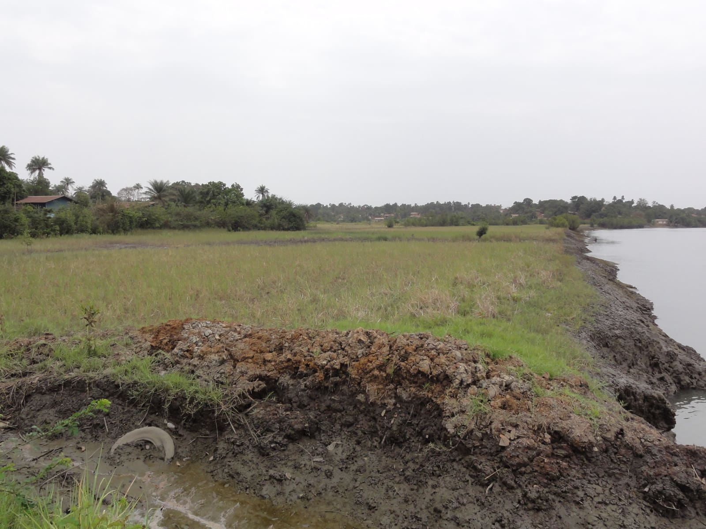

Farmer Advisory
Crop tips, district advice, pest alerts, and seasonal recommendations.
These tools use basic JavaScript to provide interactive guidance for farmers. In a real system, these would connect to expert data, weather APIs, and agricultural officers.
